17世纪的法国数学家费马[2]和笛卡儿[3]在各自的研究中发现，代数方程式可以用图像直观地呈现出来；反之，几何图形也可以用代数方程式表示。他们的这个发现让数学领域发生了翻天覆地的变化。
我们先来看一个简单方程式的图像：
y = 2x + 3
该方程式表明，对于变量x的每一个值，在把它加倍并加上3之后，就可以得到y的值。下表中列出了几组x、y的值，据此我们绘制出这些点，本例中的点有(–3, –3)、(–2, –1)、(–1, 1)等。将这些点连接起来，所得到的就是方程式的图像。下图是方程式y = 2x + 3的图像。
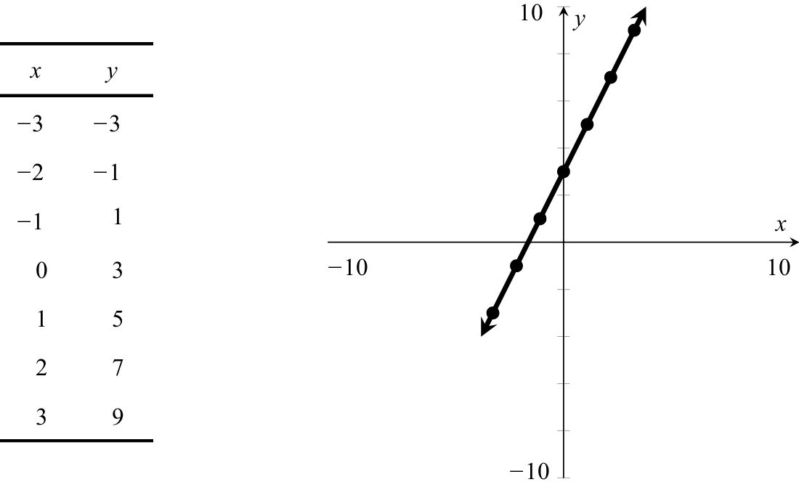
下面，我向大家介绍一些重要的术语。上图中的那条水平线叫作x轴，垂直的那条线叫作y轴。本例中的图像是一条直线，斜率是2，y轴截距是3。斜率表示这条直线的倾斜程度。斜率是2，意味着x每增加1个单位，y就会增加2个单位（从上图可以看出这个特点）。y轴截距表示x = 0时y的值。从几何学的角度看，它表示这条直线与y轴相交的位置。一般而言，方程式y = mx + b的图像是斜率为m、y轴截距为b的一条直线（反之亦然）。通常，我们通过方程式来识别直线，因此我们可以直接说，上图代表的就是直线y = 2x + 3。
下图是直线y = 2x – 2和y = –x + 7的图像。
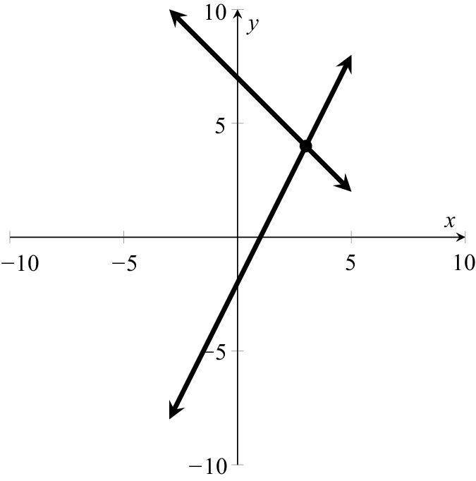
直线y = 2x – 2的斜率是2，y轴截距是 –2。（该图像与直线 y = 2x + 3平行，将后者垂直向下平移5个单位后即可得到直线y = 2x – 2。）y = –x + 7的图像斜率是 –1，这表示x每增加1个单位，y就会减少1个单位。接下来，我们通过代数运算，找出这两条直线的交点 (x, y)。在这两条直线相交的位置，这两个方程式的x和y值是相同的。因此，我们需要找到y值相同时所对应的x值。换句话说，我们需要求解下面这个方程式：
2x – 2 = – x + 7
方程式左右两边同时加上x再加上2，就可以得到：
3x = 9
因此，x =3。只要知道x的值，我们就可以利用这两个方程式中的任意一个求出y的值。由于 y = 2x – 2，x=3，所以y = 2×3 – 2 = 4。（或者因为y = –x + 7，x=3，所以y = – 3 + 7 = 4。）由此可见，这两条直线的交点是 (3, 4)。
直线的图像是很容易画出来的，因为只要知道直线上的任意两点，就可以画出整条直线。对于二次函数（包含变量x2）而言，要画出它的图像就不那么容易了。图像最简单的二次函数是 y = x2（如下图所示）。二次函数的图像被称为“抛物线”。
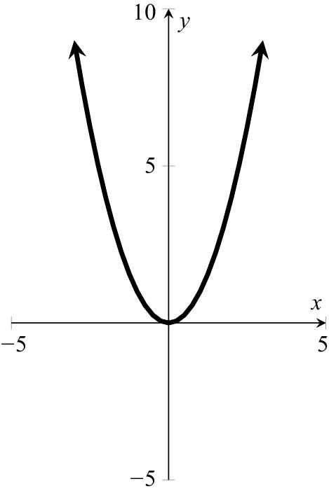
下图是y = x2 + 4x – 12 = (x + 6) (x – 2) 的图像。
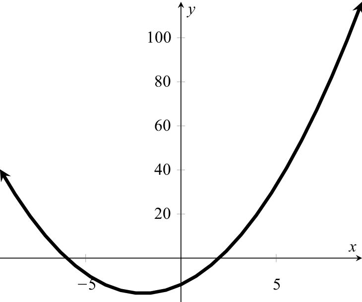
注意，当x = – 6或x = 2时，y = 0。我们从图像上可以看出，抛物线正好与x轴相交于这两个点。抛物线的最低点必然位于这两个点的中间位置，此时x = – 2。点 (– 2, – 16)被称为抛物线的“顶点”。
在日常生活中，我们每天都会与抛物线打交道。一个物体（无论是棒球还是喷泉）被抛出之后，其运动轨迹近似于一条抛物线（如下图所示）。在设计汽车车头灯、望远镜、圆盘式卫星电视天线时，人们也都参考了抛物线的特点。
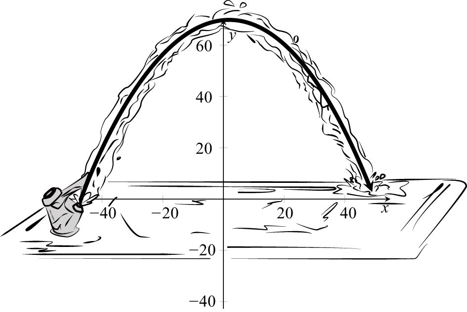
现在，我需要向大家介绍一些术语了。到目前为止，我们所讨论的都是“多项式”（polynomials），即数字与单个变量（例如x）的组合，其中变量x可以是正整数次幂的形式。最高的幂次被称为多项式的“次数”（degree）。例如，3x + 7是次数为1的（线性）多项式。次数为2的多项式（例如 x2 + 4x – 12）被称为二次多项式（quadratic）。次数为3的多项式（例如5x3– 4x3 –
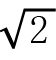
）被称为三次多项式（cubic）。次数为4和5的多项式分别叫作四次多项式（quartic）和五次多项式（quintic）。（我没听说过有哪些专有名词可以表示次数更高的多项式，主要原因是这样的多项式在现实中很少见。7次多项式是不是可以用“septic”这个英文单词来表示呢？有人认为可以，但我觉得并不好。）不含有变量的多项式（例如多项式17）的次数为0，被称为常数多项式。最后，多项式不允许包含无穷多项。例如，1 + x + x2 + x3 + …不是多项式。［它是一个“无穷级数”（infinite series），我将在第12章详细介绍这个概念。］注意，多项式中变量的次数只能是正整数，而不能是负数或者分数。例如，如果方程式中含有1 / x或者
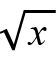
等项，我们就不能称其为多项式，因为我们知道1 / x = x–1，= x1 / 2。我们把多项式的“根”（roots）定义为当该多项式等于0时x的值。例如，3x + 7有一个根，即x = –7 / 3。x2 + 4x – 12的根是x = 2和x = – 6。有的多项式（例如x2 + 9）没有（实）根。注意，所有的一次多项式（直线）都有且只有一个根，因为这条直线与x轴有且只有一个交点。二次多项式（抛物线）最多有两个根。多项式x2 + 1、x2 和x2 – 1分别有0、1和2个根。
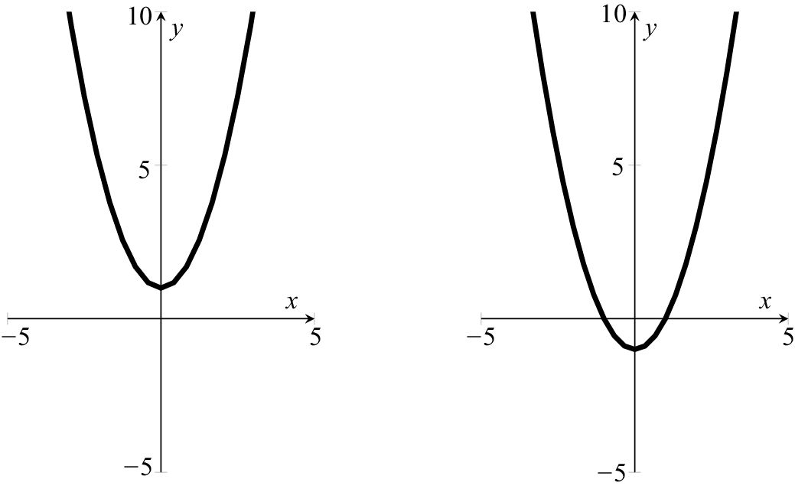
下图是三次多项式的图像。我们从图中可以看出，它们最多有3个根。
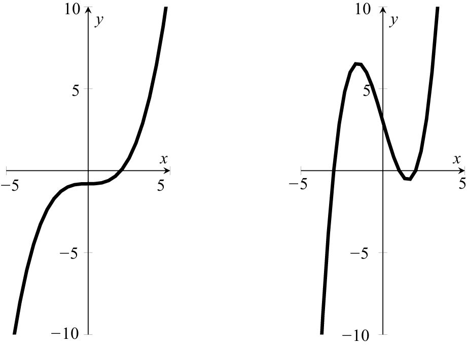
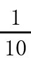
(x–2)(x2 + 2x + 4)和y = (x3–7x + 6)/ 2 =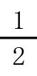
(x + 3) (x–1) (x–2)的图像（这两个多项式分别有1和3个根）在本书第10章，我们将接触到“代数的基本定理”。该定理告诉我们，每个n次多项式最多有n个根，经过因式分解后，可以转变成线性多项式和二次多项式组合的形式。例如：
(x3–7x + 6) / 2 =
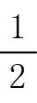
(x–1) (x–2) (x + 3)它有3个根（1、2和 –3），而x3 – 8 = (x – 2) (x2 + 2x + 4)只有一个实根，即x = 2。（它还有两个复根，但要到第10章我们才会讲到这些概念。）顺便告诉大家，现在只要在我们常用的搜索引擎中输入方程式，就可以方便地得到大多数函数的图像。例如，输入“y = (x3 –7x + 6) / 2”，就可以得到一个与上图类似的图像。
我们在本章已经学习了如何方便地找到线性和二次多项式的根。事实上，三次和四次多项式也有求根公式，但都极其复杂。这些公式是在16世纪被找到的，在随后200多年的时间里，人们试图找到五次多项式的一般求根公式。众多天才数学家前赴后继地投身于这项研究，结果都徒劳无功。19世纪初，挪威数学家尼尔斯·阿贝尔（Niels Abel）成功地证明了五次以及更高次的多项式不可能有通用的求根公式。他为世人留下了一个只有数学界才能参透其中玄机的谜题：为什么艾萨克·牛顿没有证明五次多项式没有一般求根公式的不可能定理呢？答案是：他不是阿贝尔！[4]我们将在本书第6章讨论如何证明不可能性。
为什么x–1 = 1 / x呢，例如，5–1 = 1 / 5？请观察下列数字，找出其中的规律：
53 = 125，52 = 25，51 = 5，50 = ?，5–1 = ?，5–2 =?
注意，只要我们认真思考，就会发现：指数减去1，这个数字就要被5除。要让这个规律成立，我们就需要让50 = 1，5–1 = 1 / 5，5–2 = 1 / 25，以此类推。不过，真正的原因是“指数法则”。指数法则指出，xaxb = xa +b。当a、b是正整数时，指数法则不难理解。例如，x2 = x·x，x3 = x·x·x。因此：
x2·x3 = (x·x) (x·x·x) = x5
既然a、b的值为0时，该法则也成立，那么：
xa +0 = xa·x0
由于方程式左边等于xa，因此右边也必须等于xa，这就要求x0 = 1。
由于我们希望指数法则对于负整数同样成立，因此我们必须接受：
x1·x–1 = x1+ (–1) = x0 = 1
方程式两边同时除以x，就会发现x–1 必须等于1 / x。同理，我们可以证明x–2 = 1 / x2，x–3 = 1 / x3，等等。
由于我们希望指数法则对于所有实数也成立，因此我们必须接受：
x1 / 2 ·x1 / 2 = x1 / 2 +1 / 2 = x1 = x
因此，当x1 / 2与自身相乘时就会得到x，也就是说，（当x是正数时，）x1 / 2=。